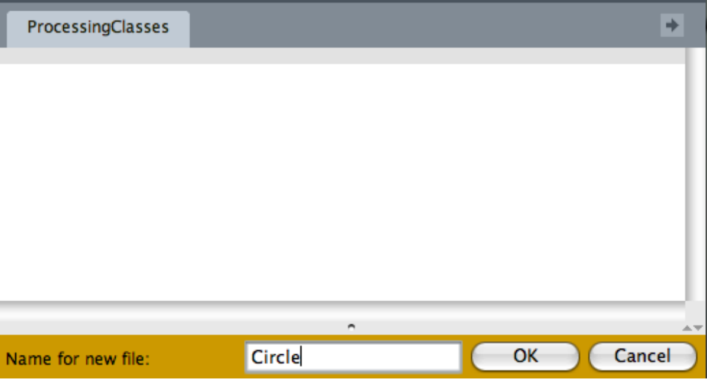
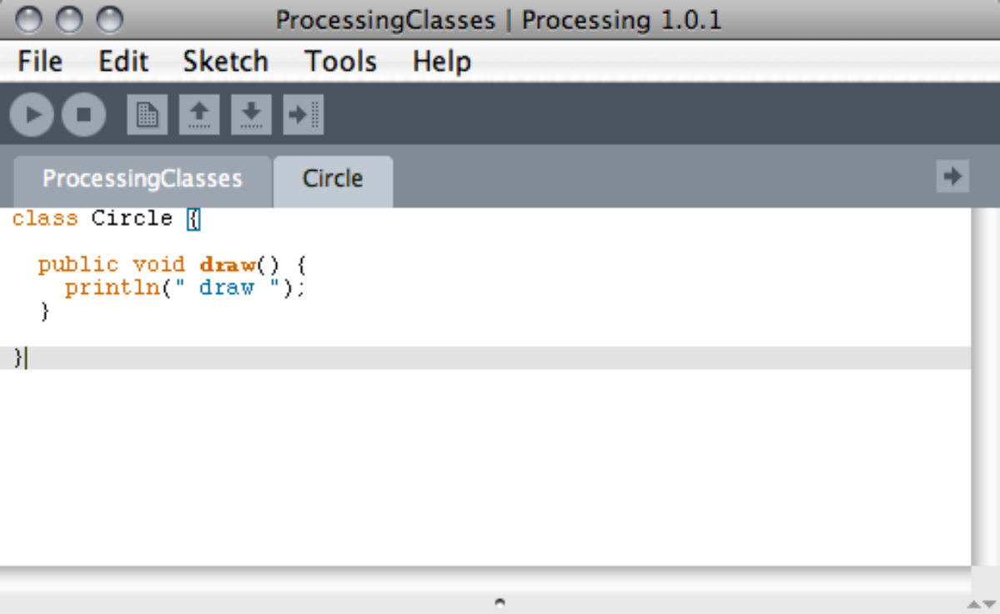
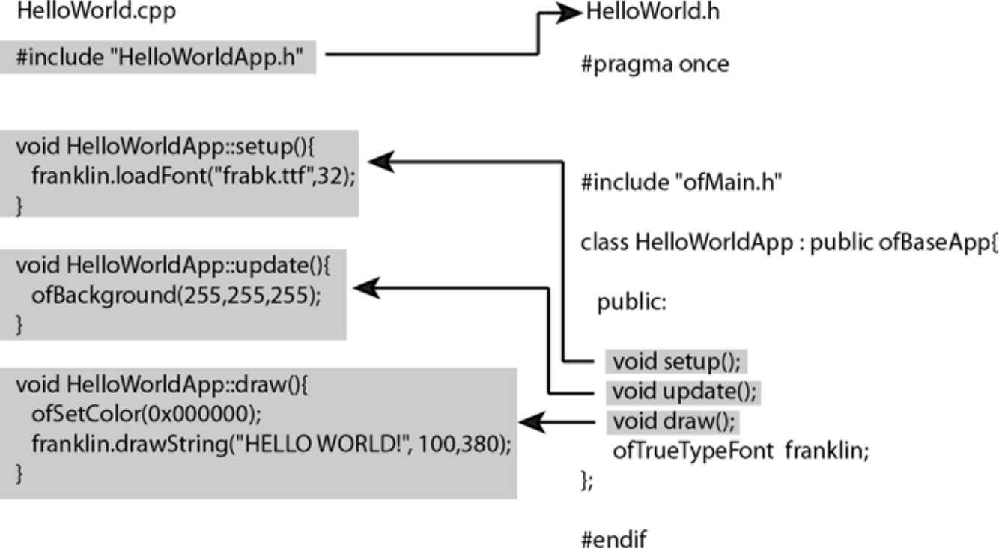
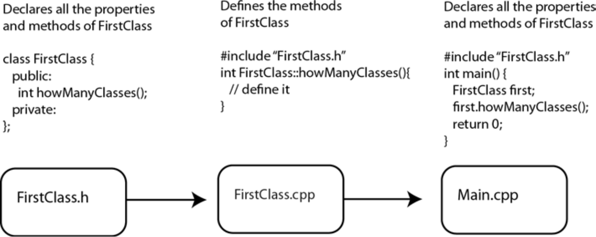
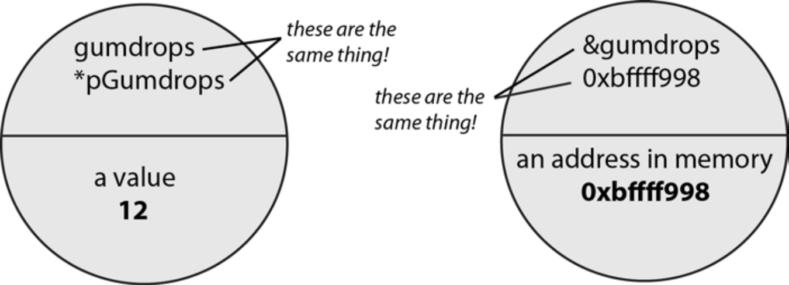
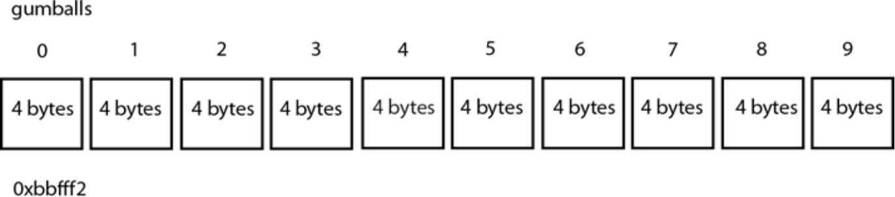

交互设计C++高级编程
交互设计C++高级编程
面向对象编程
为了更好地使用oF和Processing(有复杂定制需求时)，为实现不同需求，可能你需要用各种不同编程语言进行各种不同的编码，然后你就需要更好地组织和汇编代码的方式，这种方式就是面向对象编程。
抛开表象看本质。从本质概念上讲，面向对象大致有两个层次的内涵：
1、基于对象。就是题主所说的，只要把数据和函数放在一起就可以了。（外加普通的“继承”，不考虑多态的简单继承还算是基于对象的。）
2、多态。首先，方法可以在子类中重写；调用对象方法的时候，调用父类还是子类还是孙类的方法，能否自动选择到合适的呢？解决这个问题的设计就是“多态”。
实际上“基于对象”最重要、最常用、最根本。讨论问题本质的时候，甚至可以先不管多态。多态虽然很有用，但是如果把二者放在一起讨论，反而只会捣乱。
也就是说，要想理解透、用好 面向对象，关键要理解透、用好 基于对象 ，而这恰恰就是题主所说的，只要把属性和方法正确封装好，事情就成功了大半。
1、面向对象思想，有它很朴素、很自然的一面
我们常习惯说C语言是面向过程的语言，其实这话不大对，C语言完全可以写出面向对象的代码。因为C语言至少满足“把数据和方法封装在一起”这个基本要求，也有稍微高级点的写法实现继承和多态。
只要是写过一些实际代码的人应该都知道，无论编程语言如何简化，有一个基本功能肯定会用到——那就是把数据打包在一起。比如2D坐标需要把x和y放一起，复数需要把实部和虚部放一起，网购订单需要把单号、内容和价格放一起。
甚至退一步，回到1980年代的某些古老版本的C语言（结构体里不放函数），依然能写出符合面向对象思想的代码：
// C语言例子
struct Student{
char *name; //姓名
int num; //学号
int age; //年龄
char group; //所在学习小组
float score; //成绩
};
char* GetStudentName(struct Student* stu)
{
// 略
}
void SetStudentName(struct Student* stu, char* newName)
{
// 略
}
int main()
{
struct Student s1, s2, s3, s4; // 创建了多个学生
SetStudentName(&s1, "小明");
SetStudentName(&s2, "小红");
return 0;
}
也就是说，基于对象 本质是一个非常非常自然的概念。有了class或者struct，才能把数据放在一起，才能创建多个同类型的对象。没有struct，以上代码就没法很方便的表示多个学生。
无论谁来设计新的编程语言，几乎都会设计出类似的东西。
所以 基于对象 的概念十分容易掌握，只要合理定义了类的变量，事情就成了大半；再加上合理定义的操作（也就是方法或函数），就已经足够写出足够好的程序出来。
世界上有很多非常重要的程序，从操作系统到火控雷达，从火箭上天到载人登月，都就是用这种很朴素的思想写出来的。
2、现代的“面向对象”语言，到底干了些什么？
随着软件的进步，人们写的代码越来越多越来越复杂，不得不对语言规范做出更严格的控制，才能让软件规模进一步扩大。
这也是自然的过程，现在不管什么日常用品，都要考虑安全性、实用性、美观性，这是发展的趋势。
为了增强规范性，增强可读性，还要防止程序员犯傻，编程语言做了哪些事呢？举几个例子：
为加强权限管理，防止手滑修改变量，打造了一系列关键字，包括访问权限控制的public、private等。
Java和C#等语言，要求几乎所有的代码必须写在class内部，让面向对象更加纯粹。
继承和多态，为了它打造了一系列配套设施，比如C#至少就有virtual、override、new、protected、abstract、is、as等等有关的关键字。
static关键字，用于把属性和方法绑定到类本身，而不是对象。
“接口”的概念也和面向对象紧密相关，用它可以实现更灵活、更广泛的多态系统。当然相关的概念也多出来一堆。
因为需求是多变的，要想更好的满足需求，就要为语言不断添加新的特性。而解决问题的同时会带来另一些问题，让问题更加复杂。比如C++的const关键字就是一个典型的例子。
3、面向对象思想，只是众多程序设计思想之一
现代的“面向对象”思想发展到了一个很深入的程度，比如“设计模式”正是面向对象思想的典型例子。
设计模式的主要目标是让程序更易于扩展，“对修改封闭，对扩展开放”。也就是说理想情况下，任何新需求都能通过添加新模块解决，而不用修改老的代码。（虽然现实上有种种困难，但是这种做法在某些大型软件系统中也发挥了相当作用。）
但是要知道，越是接近现在，各种不同的设计思想越是百花齐放，各种思路也是平起平坐的关系。更多编程思想比如：
数据驱动编程（Data Driven Programming）。将程序架构的复杂度转移为结构化的数据表示，实现极其灵活的设计。
组件式编程。Unity采用了这种方式设计且获得了很大成功。组件式尽量用类的组合代替类的继承，但是依然保留了一些多态的特性。
Actor模型。与传统面向对象有良好兼容性，充分利用多核性能，在需要高性能并发的场合大放异彩。
函数式编程。比较古老的理念也焕发了新生。
当然，这些思想与面向对象并非对立，而是互为补充。
总之，退一步看。“面向对象”的种种高级特性，有时很有用，有时会被其它方式取代。而“基于对象”这一思想由于是极端朴素的，所以拥有不可替代性。无论一百年后代码怎么写，你可能都需要把相关的数据和方法打包在一起。
要去学习、去探索正确的方法，而不必拘泥于方法的名字和形式。
没有一种方法，它正确是因为具有特殊的名字。好的方法不可能用一个简单的名字概括。
类
在面向对象编程中，最常见的表现就是基于类(Class)来表现的，每一个对象实例都有具体的类，即对象的类型。使用类的面向对象编程也称为基于类的编程(Class-based programming)，如常见的Java，C++；而与之类似的有基于原型的编程(Prototype-based programming)，如JavaScript。
类：定义对象的数据格式(属性类型)和可用过程(方法)，同时也可能包含类成员的数据(如，常量)和过程(如，静态方法)，类其实就是对象的类型/原型(prototype)。
对象：类的实例，通过类实例化出来的具体实例。
如，Java中Object obj = new Object();，其中Object就是类，而obj就是具体对象实例。
公有与私有属性
面向对象的三大特征分别是：封装、继承、多态，这三者是面向对象编程的基本要素
封装(Encapsulation)
通过对象隐藏程序的具体实现细节，将数据与操作包装在一起，对象与对象之间通过消息传递机制实现互相通信（方法调用），具体的表现就是通过提供访问接口实现消息的传入传出。
封装常常会通过控制访问权限来控制对象之间的互访权限，常见的访问权限：公有(public)，私有(private)，保护(protected)。某些语言可能还会提供更加具体的访问控制，如，Java的package。
封装的意义：由于封装隐藏了具体的实现，如果实现的改变或升级对于使用方而言是无感知的，提高程序的可维护性；而且封装鼓励程序员把特定数据与对数据操作的功能打包在一起，有利于应用程序的去耦。
继承
继承(Inheritance)
支持类的语言基本都支持继承，继承即类之间可以继承，通过继承得到的类称为子类，被继承的类为父类，子类相对于父类更加具体化。
子类具有自己特有的属性和方法，并且子类使用父类的方法也可以覆盖(重写)父类方法，在某些语言中还支持多继承，但是也带来了覆盖的复杂性。
继承的意义：继承是代码复用的基础机制
Processing：类与文件
在 Processing 中，类通常在您使用 Processing 应用程序时看到的应用程序的主文件中定义。 如果您打开保存应用程序的文件夹，您会看到这个主文件是一个 .pde 文件，其中包含您的应用程序的名称。 这是你的应用程序的主文件，很多时候如果你想创建一个新类，你只需将它添加到这个文件中。 但是，在一个复杂的应用程序中，您可能想要创建多个类，并且您希望将它们分成单独的文件，以便它们更易于阅读和维护，或者您可以使用其他地方的文件。 为此，您需要做的就是在同一文件夹中创建一个新的 .pde 文件，并将您的类声明和描述放入该文件中。
要在应用程序文件夹中创建一个新的 .pde 文件，该文件将自动导入到您的应用程序中，请单击 Processing IDE 右侧的 New Tab 图标，如图所示。
图 5-3。在处理中创建一个类
这将打开一个小对话框，要求您为新文件命名（参见图 5-4）。

图 5-4。命名你的文件
在您为文件命名后，Processing 会自动在您的草图文件夹中创建新的 .pde 文件。您可以开始将您的课程添加到文件中，然后在
您的主应用程序文件，即包含 draw() 和 setup() 方法的文件（参见图 5-5）。
将这些额外的工作用于创建新文件和类，您会得到什么？创建文件和单独的类有两个明显的优点：它使组织

图 5-5。新创建的 Circle 类文件
你的代码和调试你的应用程序更容易，一旦你编写了一些运行良好的类并做了一些你想再次使用的事情，就很容易将文件复制并粘贴到一个新项目中，并重用已有的class类。最后一点虽然过于简单，但却是 Processing、Arduino 和 openFrameworks 项目的许多基础：提供可重用的代码以加快创建项目的速度。
C++：类与文件
C++是一门面向对象语言。在C++中如果不创建必要的类就很难做出像样的东西。就像你使用oF，你会发现到处都是类与类文件。本章读到这里，你应该对类有了一个明晰的认识并且知道类能做什么。
那么，现在我们来定义一个相当简单的、名为Name的类:
class Name { public:
string firstName; string secondName;
Name(string first, string second){
firstName = first; secondName=second;}
};
下一步是创建Name类的实例。在代码中我们这样创建Name类的实例:
Name name("josh", “noble");
就是这样。我们已经创建了一个类，并且生成了一个实例。我们完成得八九不离十。
那么通常情况下，类里面会创建和存储什么东西呢?一个好例子是oF核心类中的 ofSoundPlayer类。这个类描述了声音如何呈现:一个声音播放器。这个类拥有播放、停止、调节音量、设定播放器播放位置等方法。我们不希望它去做其他不相关的事，实
际上它也不会做。它还提供了许多有用的属性，以帮助我们判断当前声音是否正在播放，并且能够告诉我们在导人声音时是否遇到了问题。
我们为什么要用类?简单来说，我们使用类将需要实现的功能整体分割成多个逻辑片段，这些片段表明我们如何使用它们、应用程序如何对待它们，它们将被如何组织，考虑一下飞船游戏，游戏中有宇宙飞船、敌人、小行星、星球、高分记录等。现在来看一个例子，我们使用类来组织所有功能，当需要创建一个敌人类时。需要将敌人类置干同一位置，因为我们总是获取同样的数据特征，所以当需要对敌人类做变动时，我们只要修改这一个地方。人门很简单，但要深人掌握类的精髓可能比较困难。如何以最佳方式来组织需要的类是一个重要的主题，因为该主题扩展出很多关键点。我们不会深入探讨，在第17章会有一些针对性的介绍以及一些经典理论。
56.1.cpp和.文件
.cpp和h文件是C++类的两个文件格式，你应该将它们永远铭记心中。没错，是两个文件格式和两种不同的文件。为什么这样的原因无关紧要，重要的是这两种文件如何协同工作以及你如何使用它们。这一点很重要，我们将慢慢进行讲解。
在oF应用程序中，会有两种类型的文件:cpp和.h文件。.cpp文件包含了类的实现部分而.h文件则包含了类的原型。在.h文件中，类的原型通常包含以下内容:
在类中会用到的所有引入(import)声明(头文件)类的名称
类的扩展(后面会详解)
类中定义的变量的声明(有时称为“属性”)类中定义的方法的声明
cpp文件中是类的定义，包含如下内容:类中定义的所有方法的具体定义
那么，为什么.h文件中的内容很少，而.cpp中的内容却很多?这是因为通常情况下，具体定义一个方法的内容所占用的空间要比声明一个方法所占用的空间要多得多。如果我们需要定义一个方法，将两个数相加，并返回其和的值，我们会如下定义:
int addEmUp(int a, int b);
这就是你在.h文件中看到内容--只有方法名，却没有具体内容。让我们仔细地来看一下:这个方法是被声明，而不是被定义。现在如果你想使用这个方法，你就需要实际地去定义它，就像下面这样:
int addEmUp(int a, int b){
return a+b;
这里，你就看到了这个方法的具体内容:将两个数相加，并返回它们的和。类似于这样内容的东西，你会在.cpp文件中看到，文件中是具体的类的定义。
如果你需要在类中包含一个变量，你可以将它定义在.h头文件中。只要记住声明放在.h文件，而定义放在.cpp文件中就可以了。当你使用oF时，经常会看到如图5-6所示内容。

图5-6:类方法在cpp和.h文件中的表现
先不用管图中的这些细节，我们会第6章讨论oF时作进一步的讲解。现在，只需要注意 setup()、update()和draw()方法在.h文件里是如何声明的(并不是定义)，以及它们是如何加上类名，在.cpp文件中定义的。在读完本书后，你一定会将这一模式烂熟于心了。
56.2一个简单的C++应用程序
例5-1是你的第一个C++类，我们将其取名为FirstClass。首先，在.h文件中，所有的定义如下:
例5-1:FirstClass.h
确保我们只有一个FirstClass类 ragma once
给类命名
class Firstclass{
1/ 声明所有公有的变量与方法，即可以共享的部分 public:
FirstClass();
int howManyClasses();
private:
int classProperty;};
我们从头开始讨论，你首先看到的是很奇怪的#pragma。不要对此感到恐惧，其实它有一个完美的解释。通常，在一个较大的项目中，你会有一个类引用了很多其他的类。回头看一下我们那个小宇宙飞船游戏的例子，我们的Enemy类在许多地方被引用。当编译器编译我们的类时，我们并不希望它将Enemy类多次编译，而只想让它编译一次。将类进行多次编译意味着生成多个版本，当这些不同版本都写人程序文件时可能会引起各种问题。这个怪异的#pragma声明告诉编译器只要编译这个文件一次，而不是多次，免得以后出现令人头疼的各种问题。上面代码中剩余的部分相对来说就简单多了。关键字class出现在类名称和“{”号之前。类中所有的数据都包含在“{”和“};” 之间。
代码中你还会看到关键字public。这表明在关键字public之后的所有内容都是可以公开访问的，也就是说其他类可以直接访问FirstClass类的实例。所有数据都是公有的，直到private关键字，而逻辑上private关键字之后的所有数据都将是私有的。
通过查看.h文件，你可以知道类的名称，类定义了哪些属性、哪些方法，以及这些属性和方法是公有的还是私有的。这很棒，但还不是全部，下面我们接着来看一下.cpp文件的代码清单，了解一下这些方法是如何具体定义的。请看示例5-2。
示例5-2:FirstClass.cpp// 首先引入类的头文件#include "FirstClass.h"
//接着引人包含输出方法的文件#include <iostream>
// 这是FirstClass类对象的构造函数 FirstClass::FirstClass()
// 这是输出数据到屏幕上的函数 cout << " FirstClass " << endl; classProperty=1;//初始化类属性
int FirstClass::howManyClasses(){
// 再一次地，输出简单的信息
cout < "howManyClasses method says: 'just one class’ " << endl;//注意函数返回变量classProperty，请看一下类的声明，
// 理解我们为什么要这么做(提示:声明中该函数返回int类型)
return classProperty; // 与属性相关的其他工作
注意，对于每一个在.h文件中声明的方法，在.cpp文件中都有其相应的定义。读到这里，你应该明白类的每一个方法都是在cpp中定义并在.h文件中声明的，你也应该明白二者是如何协同工作的了。目前为止，一切都还不错。你已经有了一个类的实例，但你仍然还没有在其他任何地方真正地创建它的一个实例。这一点会在最终文件里发生改变。这个所谓的最终文件并不是一个类，而是一个单独的.cpp文件，名为main(主文件)。在C++里有一条规则，你必须有一个包含main()函数的文件。当你的应用程序执行时，这个主函数将会被调用，所以你可以将所有需要做的初始化工作都放在这里。对于oF应用程序，就是创建应用程序的一个实例并运行这个实例，在第6章我们将对此进行详细介绍。虽然并没有规定说你要有一个文件名为main的文件来运行你的应用程序，但在oF中确实是这样，请看示例5-3。
示例5-3:main.cpp
#include "FirstClass.h"
// 所有应用程序都必须有一个main()函数 int main() {
FirstClass frstClass; // 这是类的实例
firstClass.howManyClasses();// 调用该实例的方法 return o; / 到这里结束
那么，这是创建一个简单C++应用程序的唯一方法吗?答案是否定的，但是oF设定了使用这种方式，所以我们演示了这个方式(参见图5-7)。

图5-7:C++应用程序的组织
C++里还有许多关于类的技巧以及更多的神奇之处等待你去探索。如果你想学习更多你是幸运的，因为现在有大量的手册与指南可以帮助你学习C++。如果你并不想太过深人，你也是幸运的，因为oF将C++的许多复杂特性隐藏了，让你可以把更多的精力放在
项目的其他方面。
5.7指针与引用
C++是一门非常强大而且高效的编程语言，因为它是非常“低层”的语言。与Processing不同，C++并没有隐藏计算机的内部工作流程。这一点有利有弊。要掌握本书中许多 openFrameworks的实例，你至少还需要非常熟悉两个概念:指针和引用。如果你现在使用openFrameworks和C++并不感兴趣，你可以先略过本章，继续后面的内容。你或许会回过头来再看，或许不会。总之，本书的目的是帮助你，而不是强迫你去学一些你不
感兴趣的东西。
“指针”和“引用”是两个互补的概念，它们之间有着千丝万缕的联系。要想理解它们是如何工作的，你需要先理解在变量声明时都发生了什么，以及计算机内存的工作原理。看一下这句代码:
int gumballs = 6;
这句代码所做的事是，告诉计算机要存储一个int大小的东西，它的值是6，这个东西(变量)名为gumballs。你应该深刻理解变量取值和变量名称不是一回事。但在需要的时候，它们会互换角色。例如，你想把5加给gumballs:
int moreGumballs = gumballs + 5; //“gumballs”会被6代替
这很容易，因为gumballs其实代表了一段内存。这段内存的起始地址用一个形如0x2ac8这样的十六进制数表示，变量gumballs的值存放在这段内存里。变量gumballs存储了位置，这样你可以很容易地访问到它。如果你将gumballs值设为8: gumballs=8;
你就改变了gumballs所代表的内存块中存储的数据值。当你设定gumballs时，你设定的是计算机中的那块内存里所存放的内容。当你读取gumballs时，你读取的也是计算机中的那块内存里所存放的内容。你通过访问这个位置来读取存储在计算机内存中的字节(内容)。通过“友好”(可读性强)的变量名指向这个位置，其实这个位置就是内存中的地址。在真正处理指针与引用之前这些都无关紧要，因为在使用指针和引用之前，你需要清楚是否要使用指针访问内存地址，或者是否要明确地对内存进行操作。后面我们将会讨论什么时候以及为什么要这样做。
下面是一个简单的例子，你可以在任意的C++编译器上运行，通过这个例子你可以看看引用是如何工作的:
#include <iostream> int main () {
int gumballs = 6; int gumdrops = 12;
/1在这里展示我们的魔术
cout <<" the variable gumdrops has the value of " << gumdrops
cc" and the address of "<< &gumdropsc endl;
cout <<"the variable gumballs has the value of " <s gumballs
<< " and the address of " << &gumballs << endl;
}
这段代码执行之后，可能会得到如下结果:
the variable gumdrops has the value of 12 and the address of oxbffff998 the variable gumballs has the value of 6 and the address of 0xbffff99c
这里有两点需要注意。首先，请注意两个变量前的“&”号:
&gumdrops&gumballs
这两个都是引用操作，它们表示内存中想要引用的位置名称，这里存放了变量值。当你使用变量名时，你得到的是存储在那里的变量值。当你使用引用时，你得到的是实际变量值所在的位置名称(存储地址)。其次，请注意内存中的实际地址0xbffff998。这是在那个时刻我的计算机里得到的值，而如果你也运行这段代码，你所得到的输出看起来将几乎是完全不同的。这很有意思，因为这个地址是存放变量gumdrops的地方。这里所存放的是整数12，而你取得这个整数的方式是通过使用变量名gumdropse
5.7.1指针
指针之所以得名，是因为它确实有所指向，特别是它们指向内存中的地址，这与刚才讨论的引用很像。
指针，与变量和方法类似，要标明类型。这样你就知道指针所指向的这处内存中存储了什么类型的值。我们来创建一个指针指向变量gumdrops:
int* pGumdrops = &gumdrops;
这里有两个要点需要注意。其一，当指针被创建之后，变量pGumdrops与指针将要指向的变量具有相同的数据类型。如果你要用指针指向一个浮点数，那么这个指针就必定是 float类型:如果你使用指针指向一个Video类的对象，那么这个指针就必须是Video类型
(假定Video是一个类)。其二，指针使用一个跟在类型声明之后的“*”号来标明它是
一个指针变量。浮点类型的指针变量看起来如下:
foat* pointerToAFloat;
在上面的代码片段中，你已经声明了指针，但还并没有对它进行初始化。这意味着它还
没有任何指向:
pointerToAFloat=&someFloat;
现在你已经初始化了这个指针，意味着你可以使用它传递变量值，这都很好，但指针并不能直接使用。要使用指针所指向的内容，你需要间接引用指针:
int copy0fGumdrops =*pGumdrops;
要间接引用指针，也就是说，要取得指针所指向的地址中所存储的信息，在指针变量名前使用“*”符号来间接引用指针。“*”符号不仅表明指针所指向的特定地址，将其初始化后，还可以用来表示其所指向的具体内容。再来看一个演示了指针的间接引用方法的例子:
int gumdrops =12;
int* pGumdrops= &gumdrops;
cout <c " pGumdrops is ” << *pGumdrops << endl; // 输出 12 gumdrops·6;
cout << ” pGumdrops is " << *pGumdrops << endl; // 输出 6 gumdrops·123;
cout <<” pGumdrops is “<< *pGumdrops << endl;// 输出 123
任何时候，你改变变量gumdrops的值，变量pGumdrops所指向的值也随之改变。图5-8说明了变量与指针之间的关系。构造下面的代码可以解释图5-8所示的关系:

图5-8;指针与引用之间的关系，同一事物的两种表述
int gumdrops =12;
int* pGumdrops = &gumdrops;
指针与引用最大的不同可以用下面这几行代码来说明:
void checkPointer(char* c)
if(c){
cout < "pointer is good!";} else {
cout << “no pointer";
一个指针能够也必须可以被检查是否为空，这就是上面if语句的功能。如果是无效指针呢?也不会有问题。但是，你不能检测一个引用是否为空，因此你必须总是假定它们是有效的，即它们有赋值并且可用。
5.7.2引用
前面提到过，引用就是变量存储在内存中的位置。任何一个变量的地址都可以通过引用操作符(&)来获取。这意味着无论你对引用如何操作，实际都是对其所指向的内存中的内容进行操作。
如果引用恰好指向了你曾引用过的变量，你要意识到这有可能让事情很快变得糟糕。还记得作用域吗?这点变得很重要，当一个引用允许你访问变量内存的同时，它同样也假定你在正确的位置使用了正确的内容。
警告:因为你不能创建引用，所以你只能指向已经存在的东西虽然二者都会经常遇到，但你更
多的可能是使用指针而非引用。
创建引用的方式可能是你从来没见过的，就像这样:
int i = 4;
int &r=i;// 你可能从来没见过这样的
你通常所见到的引用是这样的:
void method(int& r){
//对r进行改动其实就是对r所指向的内存进行改动
)
这样就允许你更改一个对象的实际内存而不用创建一个指针。如果将一个没有正确构建的变量传递给指针，程序可能会崩溃。与指针不同的是，你不知道引用是否会被正确构建。这是引用的一个缺点:你不能像指针一样进行空值测试。
使用引用的好处在于它可以让你更改对象本身的内容。让我们看一下下面这个例子:
void swap(int i, int j) {
int tmp-i;
i=j;// 这句代码并不会改变i值 j=tmp;}
在这段代码中，我们实际上并没有改动i和j的值，这是因为在函数中它们只是值传递。该操作没有取得数值所存储的地址，只是对内存中的内容(5或12)，进行了复制。当
我们使用下面的代码时，它其实并没有正确工作:
int a = 1; int b=2; swap(a，b);
cout “< a “< “ " «< b << endl; // 输出仍然是1和2
我们使用引用对swap()方法进行修改:
void swap(int& i, int& j){
int tmp=i; i=j; j=tmp;}
现在你就取得了整数参数的实际存储地址，这就像指针，如果你更改i或j的值，你就更改了引用所指向的内容:
int a = 1; int b= 2; swap(a, b);
cout << a << " " « b << endl;// 现在这两个值互换了。太棒了!
5.7.3 何时使用指针
你可能还记得前面关于方法的讨论，将参数传递给方法时，只是对参数的副本进行操作。这通常意味着，当你给方法传递参数时，并不会改变传入的原始参数值:
void addExclamation(string s){
s.append("!");
string myName = "josh"; addExclamation(myName);
printf( myName );// 仍然是“josh”，而不会是“josh!”
我们希望通过引用将string实实在在地传递给方法，也就是说，传递给方法的是实际数值所在的内存地址，而不是数值的一个副本。调用指针变量的方法需要使用“.>”操作符，而不是“”操作符。如果你要改动传递给方法addExclamation()的变量值，你可以使用“->”操作符传递指针给方法来添加感叹号:
void addExclamation(string*s){
5->append("!");// 注意操作符->
string myName ·"josh"; string* pName · &myName;
addExclamation(pName);// 我们传递的是pName变量的内存地址，而不是其变量值 printf( myName);// 现在输出的是“josh!”，而不是“josh”
在进行指针传递时，你传递的是对象的实际地址，间接引用指针让你可以更改内存中的实际数据。如果你有一张非常大的图片需要修改，你通常直接进行修改，而不会先复制图片而后再修改它。为什么不会?这是因为这张图片可能相当大，对它进行修改可能需要消耗非常多的内存:或是你打算将同一图片作为参数进行传递。使用指针可以做这样的事:
void addExclamation(string* s){
s->append("1");}
void addQuestion(string* s){
s->append("?");}
void addQandE(string* s) {
addExclamation(s); addQuestion(s);}
string myName = "josh"; string* pName = &myName; addQandE
指针和引用联系紧密，所以你有时可能会看如下的使用方式:
void retrieve(Retriever* retriever){
retriever->retrieve();}
Retriever r;
retrieve(&r);//确保我们传递的是指针，而非其值
“&”操作符从变量那里创建了一个临时指针，所以你有时会看到这种用法。
5.7.4 何时使用引用
一般来说，你应该只在方法的签名中使用引用，如下:
void addOne(int& i){
i += 1;
这个方法基本上可以做到和指针一样的事:更改变量的实际内存值，而非变量的一个副
本。下面的程序片段使用addOne()方法可以将变量值实际地增加:
int i·1;
addOne(i);// i值现在为2!引用真神奇!
引用在oF以及一些C++代码中被大量使用。你总是可以期望使用变量传递来做正确的事，因此，当你在写代码或是使用类库(这些类库频繁使用指针和引用)时，很多情况下引用会使事情变得更容易。
5.7.5 指针使用规则
如果你有一个视频文件、一张巨幅照片或是许多声音数据，虽然你可能需要在程序中的多个地方访问它，但你并不希望总是使用它们的副本。让程序的不同部分访问同一变量而无须使用多个副本，这是指针的一个巧妙用法。
指针有几个非常重要的规则。请把它们写在某个地方、记在心里或是用其他什么方法保存下来:
在指针被初始化之前请勿访问指针: int* pInt;
printf(" printing out pInt %i ", *pInt);这不会输出任何有意义的东西。
在对指针进行操作前请检查指针是否为空(NULL): if(ptr != NULL) {
// 这里你可以使用指针了
如果你尝试使用一个没有被赋值的指针，那么你的应用程序可能不会像你期望的那样运行，甚至可能发生崩溃。虽然你可以这样: int* ptInt = 212;
但这么做并不明智。这会引起难以追踪的bug。使用指针的时候，除非你对你的技术和勇气非常自信，或是非常聪明，否则你最好给指针赋一个已经初始化过的变量。如果你对动态分配内存应用自如，指针会是一个非常强大的工具。你遇到的代码可能看起来像这样 FirstClass* fcm new FirstClass();
这句代码创建了一个新的FirstClass对象，并用一个指向这个对象的指针来访问对象。
。 如果你动态创建了一个对象，你必须自己调用delete方法来清理指针内存:
FirstClass* fc=new FirstClass();// 与fc相关的操作
... // 不再用到fc时我们需要进行清理
delete fc;
。如果你不再使用一些动态分配的指针，但你没有释放它们所占用的内存，尤其是你
在方法内给它们赋了值，但在方法结束时没有释放这些指针，这时就会产生内存泄漏。这会导致你的程序运行缓慢或直接崩溃。
使用“.>”操作符来访问指针的属性变量，就像这样: Dog*d = new Dog(); d->bark();
5.7.6 引用使用规则
·引用是对象的一个别名(另一个名称)。当你创建一个指针时，你其实是在创建另
一个指向先前那个对象的对象。引用就是对象本身。当你在方法内使用一个引用时，该引用仅存在于该方法周期内。
能用引用的时候用引用，不得不用指针的时候再用指针。
如果你希望类的属性可由其他类或代码更改，你可以使用一个方法让其返回这个属性的引用，就像这样: class dog { public:
int& getAge() { return age; } private:
int age;};
永远不要返回一个局部变量的引用。这将导致你的程序崩溃:
dog& app::createNewDog(){
dog d; return d;
)
5.7.7 指针与数组
指向一束指针的指针。确实如此，下面创建一个整型数组: 指针和数组有着密切的关系。一个数组实际上就是指向一块区域内存的指针，或是一个
int gumballs[10];
这段代码功能是创建一个接一个、共10个整数的列表。下面的代码作用相同:
&gumballs[0]
这是怎么回事?让我们来看下数组声明实际都做了些什么，请看图5-9。

图5-9:数组与指针
你所做的事就是在内存中创建一行共10个整数的列表。它们之间没有任何联系，除了它们的位置是相互间一个接一个紧挨着的。当你读取数组中的第二个元素时，你实际上做的是:读取开始那个整数之后的整数。数组本身就是一个指向其首个元素所在内存存储地址的指针，加上一个数字标号来表示数组更多的存储位置。本例中，在开始位置之后还有9个位置，一共10个。因此，如果数组起始地址就是数组在内存中第一个元素的地址，那么我们如何读取内存中的下一个元素呢?只要指针加一即可。不用再兜圈子了，其实这看起来很简单:
int myInt = 4;
int* ptInt = &myInt;
int* nextPointer=ptInt +1;// 指向下一块内存
想象一排鞋盒子。如果打个比方，用“那边那个红色的鞋盒”的说法来描述指向第二个鞋盒的指针，那么“下一个鞋盒”的说法其实就是色思。你并没有对鞋盒内的鞋子做任何事情，你只是获取了下一个鞋盒。这其实就是指针自加法所做的事。你并不是把指针所指向的数值做加法，而是对你打算访问的内存位置做了加法。再回过头看看gumballs整型数组，当你想要访问数组的第二个元素时，你可这样做:
gumballs + 1
因为gumballs是一个指针，它指向了数组的第一个元素。你可以利用指针算术来完成非常精巧的工作，当然目前这些工作还不是特别重要。
5.7.8你何时会用到这些
如果你继续阅读本书，当你在一个oF应用程序中获取声音数据时，你会第一次遇到指针。oF中要的应用程类是ofBaseApp，它有一个audioReceived()方法可以用来从计算机的声卡中获取数据。audioReceived()方法声明如下:
void audioReceived (float* input, int bufferSize, int nChannels)
float类型的指针指向声音采样数组的开始端。所有声音数据以浮点型数组的形式存储在计算机中。当你需要对计算机声卡采集到的声音数据进行处理时，你将得到一个指向数组的指针，变量bufferSize记录了这个数组的大小。要使用这些声音数据，你只要简单地使用一个for循环遍历数组中的值即可:
for (int i =o; i < bufferSize; i++){
cout < "left channel is "<< input[i*2] < " and right channel is "<<input[i*2+1] << endl;
采用这种数组元素访问方式的背后原因将在第7章解释。就目前而言，你尽可放心，如果你读懂了本章，特别是前面几节，那么你就可以用它来做一些相关的工作。如果你没有完全理解透彻，也不必担心，因为你并非必须使用指针。你会发现在这些事或者在理解如何使用它们上花越多的时间，它们也将帮你完成越多有意义的工作。
小结
类是存储在一个对象中的一组变量和方法。例如:
class Point{
int xPosition; int yposition;};
当类被定义之后，它们便可以像其他类型变量一样使用。先定义，接着进行初始化:
Point pt=new Point();
类中可定义多个方法和变量。类中所定义的方法有一个特别的--构造函数。构造函数是一个函数名称与类名相同的方法，它在类实例化时被调用:
class Point{
int xPosition; int yPosition; Point(){
//这里可以写上对象首次被创建时需要做的事
构造函数是唯一没有返回类型的类方法。
指针是C++中一个特殊的变量类型，它指向变量值在内存中的存放位置。和其他变量样，指针变量同样需要声明一个类型，且需要在类型名之后紧跟一个“*”号，用来告诉编译器这是一个指针变量:
int* intpt;
引用指向变量值在内存中的实际地址，在变量名前加上“&”符号来表示(引用操作)。当指针变量声明之后，指针可以设置为指向这个变量的引用:
int apples =18; intPt = &apples;
指针可以是变量或数值的引用，但通常只是变量的引用。
指针可以进行自增或自减操作。这个操作其实是内存地址指向的连续移动。